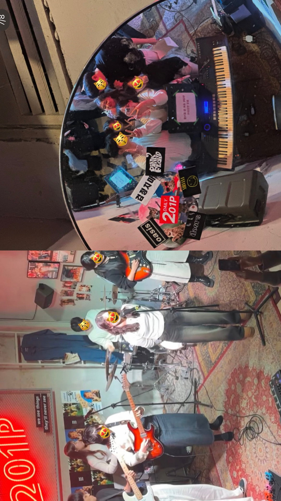

우리 밴드 소개
밴드명 : 계란흰자🥚
역할 : 베이스
활동 내용 : 201P 공연장에서 공연, 그리고 합주, 그리고 클라이밍, 그리고 노래방..
Playlist
- Letter - 유다빈밴드
- Happy - DAY6
- Wish - 오월오일
- material girl - the volunteers
- In My Place - Coldplay
- 샬로메 - 데카당
- 주제는 사랑 - 까치산
- Shoot Me - DAY6
- Die alone - 혁오
- Your Soul - Forrest Frank, Forrest.
- What is Love? - 트와이스
- 산책 - 백예린
- LOVE(Feat. Bumkey, Paloatto) - 프라이머리
- 민들레 (full ver.) - 우효
- 그런 사람 또 없습니다 - 이승철
- Big Love - 검정치마
- 청색동경 - 팔칠댄스